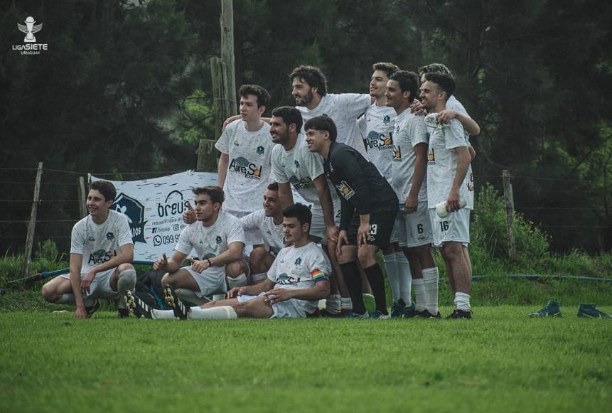

Balastro 0 - 2 Inter Nados FC
El conjunto cervecero debutaba contra un equipo duro en un partido cerrado. No fue hasta la segunda mitad en la que Alfonso Cruz conseguía con un golazo abrir el marcador a nuestro favor, decretando el primer gol en la historia de nuestro club. A los 5 minutos, gran pase de Lucio Vega y exquisita definición de Diego Acosta para liquidar el partido. De esta forma, el cervecero sellaba el debut con una gran victoria, que ayudaba a agarrar confianza en el grupo.